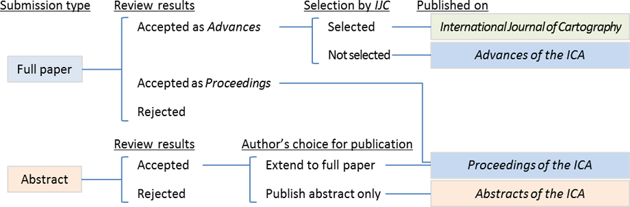

Final Manuscript submission is closed.
The 29th International Cartographic Conference (ICC 2019) of the International Cartographic Association (ICA) invites all interested participants from across the globe to submit papers or abstracts and present the latest scientific developments. Join and share the latest innovations and developments in mapping techniques, technological advancements, and current research in cartography and GIScience. Conference Themes and Topics are listed, but not limited to, below. The event is a unique experience to exchange ideas and encourage collaboration with colleagues from academia, government and industry.
ICC 2019 conform to new ICA's publication policy started in 2017. For more details of the new policy, see
ICA Publications (click to visit).
| T01 | Art and Cartography |
|---|---|
| T02 | Atlases |
| T03 | Cartographic Heritage into the Digital |
| T04 | Cartography and Children |
| T05 | Cartography in Early Warning and Crisis Management |
| T06 | Cognitive Issues in Geographic Information Visualization |
| T07 | Education and Training |
| T08 | Generalisation and Multiple Representation |
| T09 | Geospatial Analysis and Modeling |
| T10 | GI for Sustainability |
| T11 | History of Cartography |
| T12 | Location Based Services |
| T13 | Map Design |
| T14 | Map Production and Geoinformation Management |
| T15 | Map Projections |
| T16 | Maps and Graphics for Blind and Partially Sighted People |
| T17 | Maps and the Internet |
| T18 | Mountain Cartography |
| T19 | Open Source Geospatial Technologies |
| T20 | Planetary Cartography |
| T21 | SDI and Standards |
| T22 | Sensor-driven Mapping |
| T23 | Topographic Mapping |
| T24 | Toponymy |
| T25 | Ubiquitous Mapping, Spatial DB and IoT-Based Systems |
| T26 | Use, User and Usability Issues |
| T27 | Visual Analytics |
| T28 | Marine Cartography |
| T29 | Digital Humanities and GIS |
| T30 | GIS, Remote Sensing and Cartographic Theory, Methodology and Applications |
| T31 | Visualization and Analysis of Geographical Process |
| T32 | Mapping Cities |
| T33 | Design and visual variables: Rethinking Jacques Bertin |
| T34 | Geo for All: Open source GIS education |
| T35 | Crowdsourced Geospatial Information |
| T36 | Transition to Modern and Contemporary Mappings |
| T37 | Maps for SDGs |
| T38 | Mapping the Environment |
| T39 | Theoretical Cartography |
| T40 | AI, Robotics, Autonomous Cars and Mapping |
| T41 | Maps and Games |
| T42 | Big Data and Data Science |
| T43 | Others |
ICC 2019 welcome two types of submission: full paper and abstract only. All submissions are single-blind peer reviewed. Full papers have a length of 8 pages; abstracts have a length of 1-2 pages.
Full paper submission is a submission to Advances of the ICA. A few selected papers will be published on International Journal of Cartography. Abstract only submission is a submission to Proceedings of the ICA or Abstracts of the ICA.
All submissions have to be handed in the required ICA format by using a provided ICA template and saved as PDF. Please Download ICA template and guidelines for authors (described in the template file) below.
All accepted manuscripts of ICC 2019 are published on either of the new ICA's three official online publication outlets:
After the review, the review results are communicated to the authors, who prepare the final manuscript. Upon acceptance, the full papers for Advances of the ICA have to be revised according to the reviewers' comments. Authors who submit only abstract choose either Proceedings of the ICA or Abstracts of the ICA for the final manuscript publication. The abstracts for Proceedings of the ICA have to be extended to full papers of 8 pages length by using the ICA full paper template, also taking the reviewers' comments into account. Good quality papers rejected for publication in Advances of the ICA are considered for inclusion in Proceedings of the ICA.
Note that a subset of full papers will be selected for a special issue of the International Journal of Cartography.

Publication flow of ICC 2019
There are two type of presentation: oral presentation, or poster presentation. The types of presentation can be selected independently of the types of submission (full paper or abstract only).
| 31 Aug 2018 | Call for papers opens |
|---|---|
| Submission of full papers (to Advances of the ICA) | |
| Submission of abstracts (to Abstracts of the ICA and Proceedings of the ICA) | |
| Notification of acceptance | |
| Submission of final manuscripts |